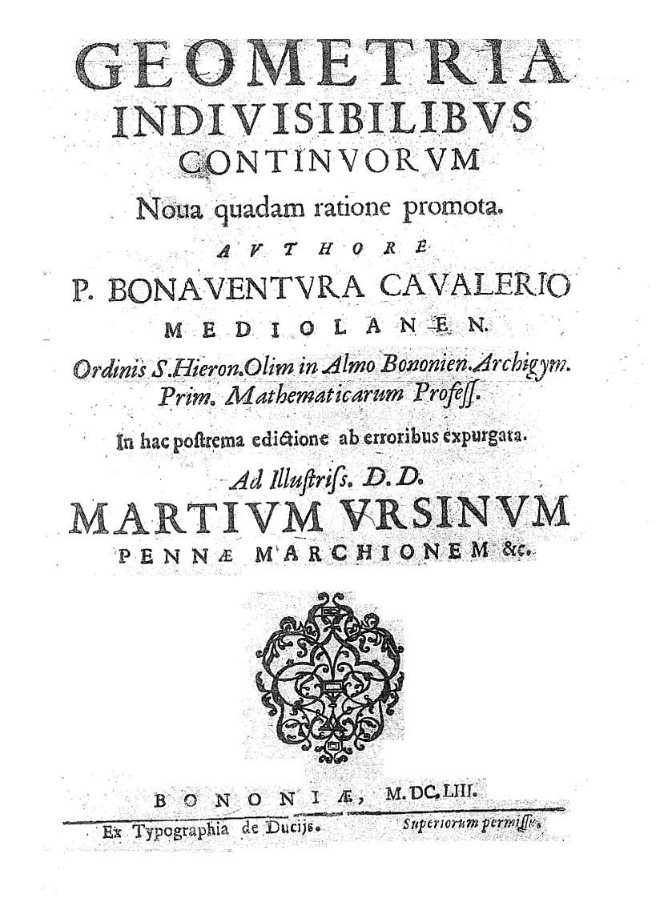
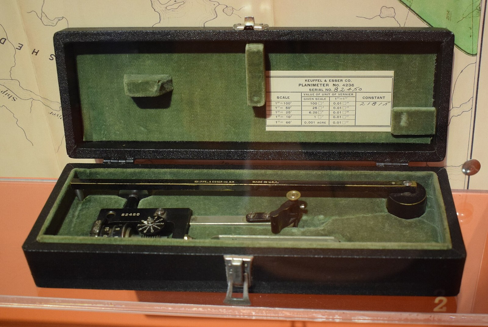
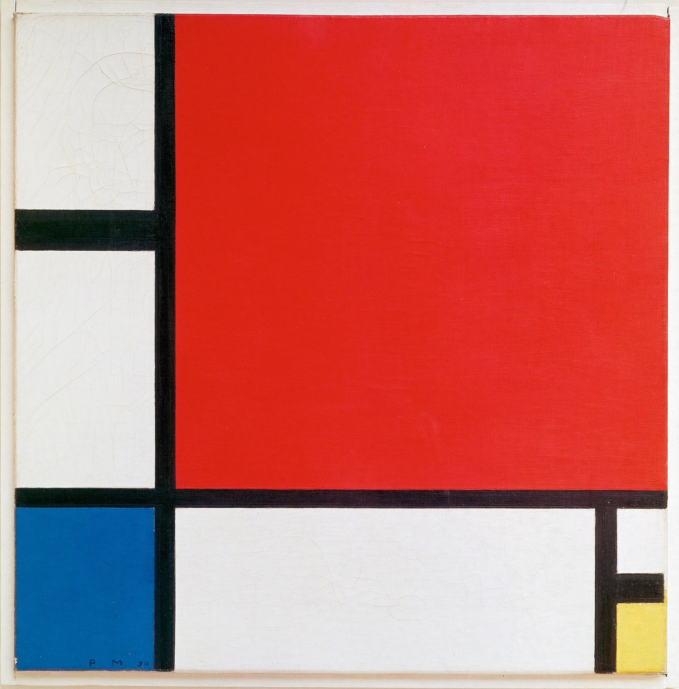
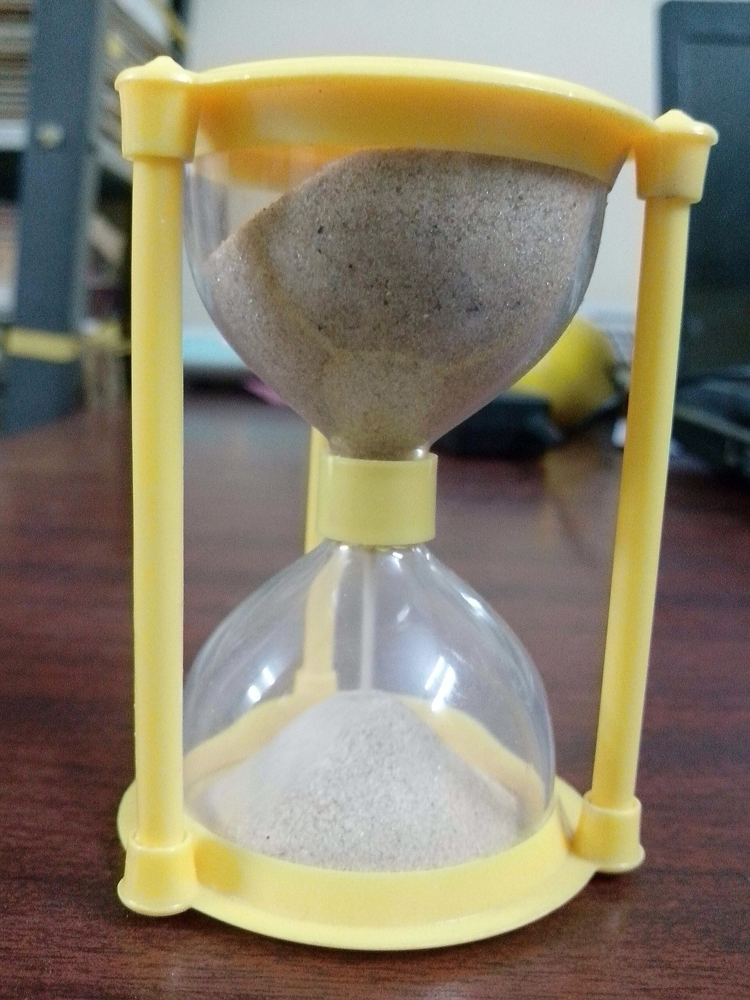
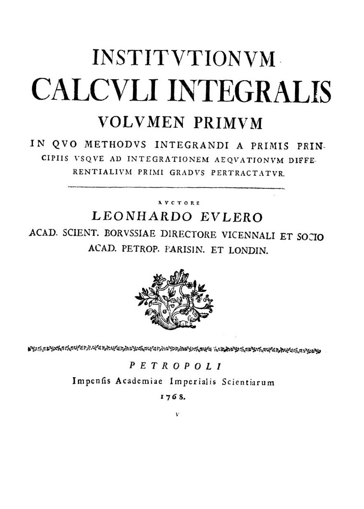

第10回
細い角材を一本ずつ積むと、塔のような高さになる。
葛飾北斎『冨嶽三十六景 本所立川』（約1833年）の一部／Public domain／Wikimedia Commons（横長に切り出した）
「細かく切って、足して、切り方を限りなく細かくする」ことで面積や走った距離を求める道具が積分である。リーマン和から定積分を定め、記号 $\int$ と $dx$ の意味を省略の段階に分けて示し、微積分学の基本定理（微分と積分が逆の操作であること）、置換積分、部分積分を、1行に1操作ずつ導く。
第1回から続けて、新しい記号は緑色の枠（記号）で「①読み方 ②日本語での意味 ③省略していない書き方 ④どこで出会うか」を書く。この回でいちばん省略が多いのは、$\displaystyle\int_a^b f(x)\,dx$ の中の $dx$ である。「$dx$ は何なのか」を、省略の段階で1段ずつ示し、以後その箱にリンクして戻れるようにする。
高校の数学Ⅱ・Ⅲで習った積分の内容も、仮定せずに一度は書く。覚えている部分は飛ばしてよい。導出は、文字だけでなく小さな数で一度ためしてから一般の場合に進む。
最初に、この回で新しく説明する記号と、前の回で説明済みの記号を分けて並べる。右の列の「→」で説明のある場所へ飛べる。
| 記号 | 読み方 | ざっくりした意味 | 説明 |
|---|---|---|---|
| $a=x_0\lt x_1\lt\cdots\lt x_n=b$（分割）、$\Delta x_i$ | ぶんかつ、デルタ・エックス・アイ | 区間を $n$ 個の小区間に切る点と、各小区間の幅 | →2.1 |
| $\displaystyle\sum_{i=1}^{n}f(c_i)\,\Delta x_i$ | リーマン和 | 細長い長方形の面積の和 | →2.2 |
| $\displaystyle\int_a^b f(x)\,dx$ | インテグラル、エーからビーまで、エフ・エックス、ディー・エックス | $a$ から $b$ までの、$f$ のグラフの下の（符号つき）面積 | →3.2 |
| $\displaystyle\int_a^b f\,dx$、$\displaystyle\int_a^b f$（省略形） | 同上 | $f(x)$ の $(x)$ や $dx$ を省いた書き方 | →3.3 |
| $F$ （$F'=f$ となる関数） | げんしかんすう | 微分すると $f$ になる関数 | →5.3 |
| $\big[F(x)\big]_a^b$、$F(x)\big|_a^b$ | エフ・エックスの、エーからビー | $F(b)-F(a)$ | →5.5 |
| $\displaystyle\int f(x)\,dx$ | ふていせきぶん | 微分すると $f$ になる関数すべて | →5.6 |
| 微積分学の基本定理 | きほんていり | 面積関数を微分すると元に戻る／定積分は $F(b)-F(a)$ | →5.2, 5.4 |
| 置換積分（$u=g(x),\ du=g'(x)\,dx$） | ちかんせきぶん | 合成関数の微分を逆にたどる | →6 |
| 部分積分（$\int f'g\,dx=fg-\int fg'\,dx$） | ぶぶんせきぶん | 積の微分を逆にたどる | →7 |
| 記号 | 意味 | 初出 |
|---|---|---|
| $=$、$:=$、$\approx$ | 等しい／左の名前を右の式で決める／ほぼ等しい | 第1回 2.1、2.2、2.4 |
| $\lt\ \gt\ \le\ \ge$ | 大小の関係 | 第1回 2.6 |
| $x_i$（添字）、$x^2$（冪）、$\cdots$ | 番号／冪／規則で続く部分を省く | 第1回 4.1、4.2、4.5 |
| 省略の段階（S0, S1, …） | 省略の度合いを段階で呼ぶ | 第1回 6.1 |
| $\in$、$\forall$、$\exists$、$\Rightarrow$ | 属する／すべての／存在する／ならば | 第2回、第2回、第2回、第2回 |
| $[a,b]$（閉区間） | $a$ 以上 $b$ 以下の実数 | 第2回 |
| $f\colon A\to B$、$f(x)$、$f\circ g$ | 関数、関数の値、合成 | 第3回、第3回、第3回 |
| 引数の省略（$f(x)\to f$） | 関数の引数を書かない | 第3回 7.1 |
| $\ln$、$\exp$、$|x|$ | 対数・指数・絶対値 | 第3回、第3回、第3回 |
| $\displaystyle\sum_{i=1}^n$（総和）、省略の段階 | 番号を動かして全部足す | 第4回 2.1、第4回 2.5 |
| ダミー添字（名前を変えてよい文字） | 和の中の仮の文字 | 第4回 3.2 |
| $\displaystyle\lim_{n\to\infty}$（極限）、連続 | 限りなく近づく／つながったグラフ | 第6回、第6回 |
| $\dfrac{df}{dx}$、$f'$（導関数） | 微分したもの | 第7回、第7回 |
| $\Delta x$（変化量） | $x$ の変化の大きさ | 第7回 |
| 微分の規則（積・商・合成） | 積の微分、合成関数の微分 | 第7回 |
| $df$、$dx$（微分） | $dx$ を独立した記号として扱う見方 | 第8回 |
PHOTO 1｜現実

面積を、細い線の積み重ねとして数えようとした、カヴァリエリの本の扉である。
ボナヴェントゥーラ・カヴァリエリ『Geometria indivisibilibus continuorum』（1653年版）／Public domain／Wikimedia Commons（縮小した）
まず、いちばん簡単な場面から始める。秒速 $3\ \mathrm{m/s}$ で一定の速さで $4$ 秒歩く。進んだ距離は
$$ 3\ \mathrm{m/s}\times 4\ \mathrm{s}=12\ \mathrm{m} $$
である。横軸を時刻、縦軸を速さにしてグラフを描くと、これは横が $4$、縦が $3$ の長方形の面積になっている。「速さ × 時間 ＝ 距離」は、「縦 × 横 ＝ 面積」と同じ形をしている。
この長方形を図1.1 に描く。
では、速さが時間とともに変わるとき、たとえば $0$ 秒から $2$ 秒まで、時刻 $t$ 秒のときの速さが $v(t)=t\ \mathrm{m/s}$ （だんだん速くなる）のとき、距離はどうなるか。「速さ × 時間」と書こうとしても、どの速さを掛ければよいのかが決まらない。最初の速さ $0$ を使うと $0\times 2=0\ \mathrm{m}$、最後の速さ $2$ を使うと $2\times 2=4\ \mathrm{m}$ となり、どちらも「ちょうどの値」ではなさそうである。
ここで、次の方法を思いつく。
これが積分の考え方のすべてである。この節では、これを具体的な数でやってみる。
$0$ 秒から $2$ 秒を、幅 $0.5$ 秒ずつ 4つに区切る。区切りの時刻は $0,\ 0.5,\ 1,\ 1.5,\ 2$ である。
各区間の速さを、その区間の左端の時刻の速さで代表させる（これを「左端で見積もる」と呼ぶ）。
| 区間 | 左端の時刻 | その速さ $v$ | 幅 | 小さな距離（速さ × 幅） |
|---|---|---|---|---|
| $[0,\,0.5]$ | $0$ | $0$ | $0.5$ | $0\times 0.5=0$ |
| $[0.5,\,1]$ | $0.5$ | $0.5$ | $0.5$ | $0.5\times 0.5=0.25$ |
| $[1,\,1.5]$ | $1$ | $1$ | $0.5$ | $1\times 0.5=0.5$ |
| $[1.5,\,2]$ | $1.5$ | $1.5$ | $0.5$ | $1.5\times 0.5=0.75$ |
足すと $0+0.25+0.5+0.75=1.5$。これは見積もりであって、真の距離ではない。なぜなら、各区間の中で速さは増え続けているのに、「左端の（その区間でいちばん遅い）速さ」で代表させているから、実際より少なく見積もっているはずである。
逆に、各区間の右端の速さで代表させると、
| 区間 | 右端の時刻 | その速さ $v$ | 幅 | 小さな距離 |
|---|---|---|---|---|
| $[0,\,0.5]$ | $0.5$ | $0.5$ | $0.5$ | $0.25$ |
| $[0.5,\,1]$ | $1$ | $1$ | $0.5$ | $0.5$ |
| $[1,\,1.5]$ | $1.5$ | $1.5$ | $0.5$ | $0.75$ |
| $[1.5,\,2]$ | $2$ | $2$ | $0.5$ | $1$ |
足すと $0.25+0.5+0.75+1=2.5$。こちらは、各区間でいちばん速い速さで代表させているので、実際より多く見積もっている。真の距離は、$1.5$ と $2.5$ のあいだにある。
2つの見積もりを、図1.2 で並べて見る。長方形1本が、表の1行（速さ × 幅）に当たる。
区切りを細かくしていくと、2つの見積もりはどう変わるか。区間の幅を $\dfrac{2}{n}$ にして（$n$ 個に区切る）、同じ計算を繰り返す。
| 区切りの数 $n$ | 幅 $2/n$ | 左端で見積もり | 右端で見積もり | 差（右 − 左） |
|---|---|---|---|---|
| $4$ | $0.5$ | $1.5$ | $2.5$ | $1$ |
| $10$ | $0.2$ | $1.8$ | $2.2$ | $0.4$ |
| $100$ | $0.02$ | $1.98$ | $2.02$ | $0.04$ |
2つの見積もりが、どちらも $2$ に近づいていく。実際、$v(t)=t$ のグラフ（原点から出る斜めの直線）と $t$ 軸と直線 $t=2$ で囲まれた図形は、底辺 $2$、高さ $2$ の直角三角形で、面積は $\dfrac12\times 2\times 2=2$ である。細かく区切るほど、見積もりは真の値 $2$ に近づく。これが次の節で正確に述べる「リーマン和の極限」の最小の例である。（検算：左端は $2-\frac2n$、右端は $2+\frac2n$ と書ける。$n=4$ で $1.5$ と $2.5$、$n=100$ で $1.98$ と $2.02$。）
表の続きを、区切りの数 $n$ を $1$ から $20$ まで動かしてグラフにしたのが図1.3 である。
PHOTO 2｜現実

図形の縁をなぞって面積を測る道具、プラニメーターである。
Cantons-de-l'Est（2019年、ケフェル・アンド・エッサー社のプラニメーター）／CC BY-SA 4.0／Wikimedia Commons（縮小した）
MITATE 2｜見立て

黒い線で区切った長方形のそれぞれが、色と面積をもっている。
ピート・モンドリアン『赤、青、黄のコンポジション II』（1930年）／Public domain／Wikimedia Commons（縮小した）
前の節でやった操作を、記号で書く。まず「区切り」を書く言葉を決める。
①読み方：「ぶんかつ」。$x_i$ は「エックス・アイ」。$\Delta x_i$ は「デルタ・エックス・アイ」。
②日本語での意味：分割とは、区間 $[a,b]$（第2回の閉区間）を、$a$ から $b$ まで順に並んだ点 $x_0,x_1,\ldots,x_n$ で $n$ 個の小区間に切ること。$\Delta x_i$ は、$i$ 番目の小区間 $[x_{i-1},\,x_i]$ の幅（長さ）。
③省略していない書き方：$x_0:=a$ とし、$x_n:=b$ とし、その間の点を $x_0\lt x_1\lt x_2\lt\cdots\lt x_n$ となるように選ぶ。幅は
$$\Delta x_i := x_i-x_{i-1}\qquad(i=1,2,\ldots,n)$$
と定める。ここで $x_i$ は第1回の添字（点に番号をつけたもの）、$:=$ は第1回の定義の等号、$\Delta x$ は第7回の「$x$ の変化量」と同じ意味（$x_i$ から見て $x_{i-1}$ からの変化）である。特に、等間隔に切るときは $\Delta x_i=\dfrac{b-a}{n}$ がすべての $i$ で同じになるので、添字 $i$ を省いて単に $\Delta x$ と書く。
④どこで出会うか：積分の定義（この回）、数値積分（第48回の台形公式・シンプソン公式）、重積分（第13回）。
例：$[0,2]$ を4等分すると、$n=4$、$x_0=0,\ x_1=0.5,\ x_2=1,\ x_3=1.5,\ x_4=2$。幅は $\Delta x_1=x_1-x_0=0.5-0=0.5$、$\Delta x_2=1-0.5=0.5$、$\Delta x_3=0.5$、$\Delta x_4=0.5$ で、すべて $\dfrac{2-0}{4}=0.5$ に等しい。小区間の幅を全部足すと、全体の長さ $b-a$ になる（$0.5\times4=2$）。
分割と幅の記号を、数直線の上に図2.1 で置く（$n=4$）。
「分割の点は必ず等間隔」と思い込む必要はない。定義としては、間隔が不ぞろいでもよい（そのときは $\Delta x_i$ が $i$ ごとに違う）。ただしこの教材では、計算を簡単にするため、ほとんどの例で等間隔を使う。
各小区間 $[x_{i-1},\,x_i]$ の中から、速さ（高さ）を見る場所を1つ選ぶ。その点を $c_i$ と書く。前の節の「左端」なら $c_i=x_{i-1}$、「右端」なら $c_i=x_i$ である。
①読み方：「シグマ、アイ イコール いちから エヌまで、エフ・シー・アイ、デルタ・エックス・アイ」。
②日本語での意味：細長い長方形の面積を全部足したもの。$i$ 番目の長方形は、底辺が小区間の幅 $\Delta x_i$、高さが $f(c_i)$（その小区間の中の1点 $c_i$ での関数の値）。
③省略していない書き方：第4回の総和の完全形で、足す項（一般項）を「$f(c_i)\,\Delta x_i$」としたもの。展開すると
$$\sum_{i=1}^{n}f(c_i)\,\Delta x_i=f(c_1)\,\Delta x_1+f(c_2)\,\Delta x_2+\cdots+f(c_n)\,\Delta x_n$$
である。ここで $f(c_i)\,\Delta x_i$ は「$f(c_i)$ 掛ける $\Delta x_i$」（第1回の掛け算の省略で、$\cdot$ を書いていない）。$c_i$ の条件は、$x_{i-1}\le c_i\le x_i$ （$\le$ でつなぐ。$c_i$ は $i$ 番目の小区間の中にある）。
④どこで出会うか：積分の定義（この回）。物理で「微小な量を足し合わせる」と言うときの、足し合わせの正体。
前の節の計算で確かめる。$f(t)=t$（速さの関数。ここでは $v$ を $f$ と呼ぶ）、$n=4$、左端 $c_i=x_{i-1}$ のとき、
$$\sum_{i=1}^{4}f(c_i)\,\Delta x_i=f(0)\cdot0.5+f(0.5)\cdot0.5+f(1)\cdot0.5+f(1.5)\cdot0.5=0+0.25+0.5+0.75=1.5$$
となり、前の節の表の合計と一致する。
和の1つの項 $f(c_i)\,\Delta x_i$ が、グラフのどこに当たるかを図2.2 に描く。
リーマン和は見積もりであり、真の面積とは一般には異なる。そして、$c_i$ の選び方（左端か右端か真ん中か）や $n$ によって値が変わる。「リーマン和 ＝ 面積」ではなく、「$n$ を大きくしたときのリーマン和の近づく先 ＝ 面積」である。この「近づく先」を次の節で定義する。
直線ではなく、曲がったグラフでも同じことをやってみる。$f(x)=x^2$（冪）、区間 $[0,1]$、$n=4$ 等分（幅 $\Delta x=\frac14$、点は $0,\ \frac14,\ \frac24,\ \frac34,\ 1$）。
右端で見る場合の長方形の高さは $f(\frac14)=\frac1{16}$、$f(\frac24)=\frac4{16}$、$f(\frac34)=\frac9{16}$、$f(1)=\frac{16}{16}$ なので、
$$\text{右端の和}=\frac14\left(\frac1{16}+\frac4{16}+\frac9{16}+\frac{16}{16}\right)=\frac14\cdot\frac{30}{16}=\frac{30}{64}=\frac{15}{32}=0.46875$$
左端で見る場合の高さは $f(0)=0$、$f(\frac14)=\frac1{16}$、$f(\frac24)=\frac4{16}$、$f(\frac34)=\frac9{16}$ なので、
$$\text{左端の和}=\frac14\left(0+\frac1{16}+\frac4{16}+\frac9{16}\right)=\frac14\cdot\frac{14}{16}=\frac{14}{64}=\frac7{32}=0.21875$$
各区間の真ん中（中点）で見る場合は、高さが $f(\frac18)=\frac1{64}$、$f(\frac38)=\frac9{64}$、$f(\frac58)=\frac{25}{64}$、$f(\frac78)=\frac{49}{64}$ なので、
$$\text{中点の和}=\frac14\cdot\frac{1+9+25+49}{64}=\frac14\cdot\frac{84}{64}=\frac{21}{64}=0.328125$$
下の図は、右端で見た4本の長方形である。曲線の上にはみ出している部分があるので、右端の和は多めの見積もりになっている（このグラフは右へ行くほど上がるから）。
その4本の長方形を図2.3 に描く。
では、一般の $n$ で右端の和を計算する。ここで第4回 7.4 の公式 $\displaystyle\sum_{k=1}^{n}k^2=\frac{n(n+1)(2n+1)}{6}$ を使う。式変形は1行に1操作で進める。
確かめ：$n=4$ なら $\dfrac13+\dfrac18+\dfrac1{96}=\dfrac{32+12+1}{96}=\dfrac{45}{96}=\dfrac{15}{32}$。上の $0.46875$ と一致する。$n=10$ なら $\dfrac13+0.05+\dfrac1{600}\approx0.385$。$n=100$ なら $\approx0.33835$。
この式で $n\to\infty$ とすると、$\dfrac1{2n}\to0$、$\dfrac1{6n^2}\to0$（第6回の極限）なので、右端の和は$\dfrac13$ に近づく。左端の和も同じ手順の計算で $\dfrac{(n-1)(2n-1)}{6n^2}=\dfrac13-\dfrac1{2n}+\dfrac1{6n^2}$ となり、同じ $\dfrac13$ に近づく。こうして、$x^2$ のグラフの下の面積は $\dfrac13$ だと分かる。
| $n$ | 左端の和 | 中点の和 | 右端の和 |
|---|---|---|---|
| $4$ | $0.21875$ | $0.328125$ | $0.46875$ |
| $10$ | $0.285$ | $0.3325$ | $0.385$ |
| $100$ | $0.32835$ | $0.333325$ | $0.33835$ |
3つの列とも $\frac13=0.3333\ldots$ に近づいている。特に中点の和は、同じ $n$ でも誤差がずっと小さい（$n=4$ でも $0.328$）。（これは第48回の数値積分で再び出てくる。）
表の $n=4$ と $n=10$ の行を、図2.4 で長方形のまま並べる。上から左端・中点・右端である。
$f(c_i)$ が負の値になる区間では、長方形の「高さ」が負なので、$f(c_i)\,\Delta x_i$ も負になる。つまり、グラフが $x$ 軸の下にある部分は、リーマン和の中で引き算として働く。
速さの例で言えば、$v(t)\gt0$ は「前へ進む」、$v(t)\lt0$ は「後ろへ戻る」で、足し合わせた結果は前に進んだ距離から後ろに戻った距離を引いたもの（位置の変化）になる。これを符号つき面積と呼ぶ。（本当の「面積」は負にならないので、符号つきと断る。）
例：$f(x)=\sin x$、区間 $[0,2\pi]$。$0\le x\le\pi$ では $\sin x\ge0$、$\pi\le x\le2\pi$ では $\sin x\le0$。上半分と下半分は対称で、符号つき面積は $+2$ と $-2$ で、合計は $0$ である（5.4 で確かめる）。
この例を図2.5 に描く。
「積分の値は面積だから、負にならない」は誤り。$\int_a^b f(x)\,dx$ が負になるのは、グラフが $x$ 軸の下にある部分が多いとき。「ふつうの意味の面積（グラフと $x$ 軸で囲まれた図形の大きさ）」がほしいときは、$\int_a^b|f(x)|\,dx$ （絶対値）や、符号が変わる点で区間を分けて計算する。
前の節で見たように、区切りを細かくするとリーマン和が一定の値に近づく。「近づく先」を、第6回の極限で言い表す。
関数 $f$ が閉区間 $[a,b]$ で連続であるとき、区間 $[a,b]$ を $n$ 等分した分割（幅 $\Delta x=\dfrac{b-a}{n}$）と、各小区間の中の点 $c_i$ について、リーマン和
$$\sum_{i=1}^{n}f(c_i)\,\Delta x$$
は、$c_i$ の選び方によらず、$n\to\infty$ のときある一つの数に近づく。この数を $f$ の $a$ から $b$ までの定積分といい、$\displaystyle\int_a^b f(x)\,dx$ と書く：
$$\int_a^b f(x)\,dx:=\lim_{n\to\infty}\sum_{i=1}^{n}f(c_i)\,\Delta x$$
ここで言っている「ある一つの数に近づく」ことの証明（連続関数なら必ず近づくこと）は、この教材では行わない。細かく言うと、小区間の中の $f$ の最大値と最小値を使った上和・下和が同じ値に近づくことの確認が必要で、解析学の教科書（OpenStax Calculus Vol.1 の第5.2節、Book of Proof 第13章のような「微積分の証明」の章）にある。この教材では、連続関数ならこの極限が存在するという事実を認めて使う。
なお、連続でない関数でも、グラフが途中で何回か飛ぶだけなら定積分は定義できる（区間を飛ぶ点で分けて足せばよい）。一般の関数まで広げた定義は、研究室で必要になるまで使わないので省く。
①読み方：「インテグラル、エーからビーまで、エフ・エックス、ディー・エックス」。または「$f(x)$ を $a$ から $b$ まで積分する」。
②日本語での意味：区間 $[a,b]$ で、グラフ $y=f(x)$ と $x$ 軸のあいだにある（符号つき）面積。$f(x)\ge0$ ならふつうの面積。
③省略していない書き方：3.1 の定義の右辺、つまり
$$\int_a^b f(x)\,dx=\lim_{n\to\infty}\left(f(c_1)\,\Delta x+f(c_2)\,\Delta x+\cdots+f(c_n)\,\Delta x\right)\quad\left(\Delta x=\frac{b-a}{n}\right)$$
を、5つの部品の記号にまとめたもの。
つまり、$f(x)\,dx$ は「高さ × 幅」の掛け算で、$\int$ がそれを区間にわたって足し合わせる。
④どこで出会うか：すべての科目。力学の仕事 $W=\int F\,dx$、電磁気学のガウスの法則、確率（第44回）、フーリエ変換（第37回）、ラプラス変換（第38回）。
3つの対応を表にしておく。
| 有限個の和（リーマン和） | 積分 | 変わったこと |
|---|---|---|
| $\displaystyle\sum_{i=1}^{n}$ | $\displaystyle\int_a^b$ | とびとびに $i=1,\ldots,n$ を足す → 連続的に $x$ を $a$ から $b$ まで動かして足す |
| $f(c_i)$ | $f(x)$ | 各小区間の代表点での値 → 動いている点 $x$ での値 |
| $\Delta x$（有限の幅） | $dx$ | 有限の幅 → 限りなく小さい幅 |
表の3行を、記号の部品どうしの対応として図3.1 に描く。
$dx$ をどう捉えるかには、3つの立場がある。どれで計算しても、定積分の値は同じ。
この教材は、(b) の見方で式を読み、(a) で厳密さを確認する、という立場をとる。
積分の記号は、本によって短く書かれることが多い。省略の段階を並べておく。
| 段階 | 書き方 | 何を省いたか | 省いても困らない理由、困る場面 |
|---|---|---|---|
| S0 | $\displaystyle\lim_{n\to\infty}\sum_{i=1}^{n}f(c_i)\,\Delta x\ \Bigl(\Delta x=\tfrac{b-a}{n}\Bigr)$ | （省略なし。リーマン和の極限） | —。ここから先は、これを短く書いている |
| S1 | $\displaystyle\int_a^b f(x)\,dx$ | 極限 $\lim_{n\to\infty}$、添字 $i$、分割の点 $c_i$ を、記号 $\int$ と $dx$ の中に折りたたむ | 「限りなく細かく足す」ことは $\int$ が表し、「幅」は $dx$ が表すと約束した。この教材で標準の書き方 |
| S2 | $\displaystyle\int_a^b f\,dx$ | $f(x)$ の引数 $(x)$ を省く | $dx$ の $x$ が積分変数を示すので、$f$ が $x$ の関数だと読める。第3回の引数の省略と同じ。$f$ が複数の変数をもつと、どれで積分するかを $dx$ だけで決める |
| S3 | $\displaystyle\int_a^b f$ | $dx$ を省く | 積分変数が 1 つしかないと決まっているとき（解析学の理論で多い）。変数が 2 つ以上の関数、置換積分、物理の式では使えない（何で足すか決まらない） |
| S1′ | $\displaystyle\int_a^b dx\,f(x)$ | $dx$ を前に出す（省略というより順序の入れ替え） | 「$\int dx$ で足す範囲を示してから、中身を書く」という書き方。物理（場の理論・多重積分）で多い。意味は S1 と同じ |
| S4 | $\displaystyle\int_{[a,b]}f\,d\mu$ | 上端・下端を区間 $[a,b]$ に、$dx$ を一般の「測り方」$d\mu$ に替える | 測度論の書き方。この教材では使わない（確率の第44回で名前だけ出る） |
本を読むときは、S2・S3 の形に出会ったら、S1 に戻す習慣をつける。戻し方は、「何の変数で足すか」（$dx$ の $x$）と、「どこからどこまでか」（上端・下端）の 2 つを確認すること。
表の主な4段を、図3.2 の階段に並べる（S1′ と S4 は横道なので省いた）。
もう 1 つ大事な約束がある。積分変数は第4回のダミー添字と同じで、名前を変えてよい。
$$\int_0^1 x^2\,dx=\int_0^1 t^2\,dt=\int_0^1 s^2\,ds\ (=\tfrac13)$$
どれも「$0$ から $1$ まで、変数を動かして $(\text{変数})^2$ を足す」で、同じ数 $\frac13$ である。理由は、リーマン和 $\sum_i c_i^2\,\Delta x$ を書いたとき、$c_i$ にどの名前をつけても答えが変わらないから。定積分の値は数であって、$x$ の関数ではない。
$\displaystyle\int_0^x x\,dx$ のように、上端の $x$ と積分変数の $x$ が同じ文字だと、どの $x$ が動き、どの $x$ が固定された上端かが読めなくなる。上端が動くときは、積分変数を別の文字にして $\displaystyle\int_0^x t\,dt$ と書く。（この書き方は 5.1 で使う。）
定積分の性質を、リーマン和（有限個の和）で一度確かめ、そのあと極限を取っても保たれる、という形で導く。第4回の和の性質（4.3、4.4）がそのまま積分に移る。
$k$ を定数とすると、
$$\int_a^b k\,f(x)\,dx=k\int_a^b f(x)\,dx,\qquad \int_a^b\bigl(f(x)+g(x)\bigr)dx=\int_a^b f(x)\,dx+\int_a^b g(x)\,dx$$
理由（1行に1操作）：
和についても、$\sum_i(f(c_i)+g(c_i))\Delta x=\sum_if(c_i)\Delta x+\sum_ig(c_i)\Delta x$ （第4回 4.3）から、同じ流れで出る。
$a\lt c\lt b$ のとき、
$$\int_a^b f(x)\,dx=\int_a^c f(x)\,dx+\int_c^b f(x)\,dx$$
理由：$[a,b]$ のグラフの下の面積は、$c$ で左右に切った 2 つの面積の和だから（リーマン和なら、分割の点に $c$ を含めて、長方形を $c$ の左と右に振り分けるだけ）。数での確認：$\int_0^2 x\,dx=2$、$\int_0^1x\,dx=\frac12$、$\int_1^2x\,dx=\frac32$（台形の面積 $\frac{(1+2)\cdot1}{2}=1.5$）で、$\frac12+\frac32=2$ ✓。
数での確認を図3.3 に描く。
約束として、
$$\int_b^a f(x)\,dx:=-\int_a^b f(x)\,dx,\qquad \int_a^a f(x)\,dx:=0$$
と定める（定義であって、証明ではない）。なぜこう決めるのか。(2) の式 $\int_a^b=\int_a^c+\int_c^b$ は、$c$ が $a$ と $b$ のあいだにあるときだけ書いたが、$c$ がどこにあっても成り立つようにしたい。たとえば $c=a$ とすると、$\int_a^b=\int_a^a+\int_a^b$ なので、$\int_a^a=0$ でなければならない。また $b=a$ として $\int_a^a=\int_a^c+\int_c^a$ とすると、$0=\int_a^c+\int_c^a$、つまり $\int_c^a=-\int_a^c$ でなければならない。そう決めておけば、「区間をつなぐ」公式が順序に関係なく使える。
リーマン和でも整合している：右から左へ進むと $\Delta x=\frac{a-b}{n}$ が負になり、和全体が負になる。
$[a,b]$ のすべての $x$ で $f(x)\le g(x)$ ならば、
$$\int_a^b f(x)\,dx\le\int_a^b g(x)\,dx\qquad(a\lt b)$$
理由：リーマン和の各項で $f(c_i)\,\Delta x\le g(c_i)\,\Delta x$ （$\Delta x\gt0$ を掛けても不等号の向きは変わらない）が成り立つので、足しても不等号が保たれる。極限を取っても保たれる。
(4) の逆は成り立たない。「$\int_a^bf\le\int_a^bg$ だから、すべての $x$ で $f(x)\le g(x)$」とは言えない。面積の合計が小さくても、場所によっては $f$ が $g$ より大きいことがある。
また、積の積分は積の積分の積ではない：$\int_0^1 x\cdot x\,dx=\frac13$ だが、$\int_0^1x\,dx\cdot\int_0^1x\,dx=\frac12\cdot\frac12=\frac14$ （第4回 4.5 の「掛け算は分けられない」と同じ）。
区間 $[a,b]$ での $f$ の平均値を、有限個の数の平均「$\frac1n\sum f(c_i)$」から広げて定める。
$$\bar f:=\frac1{b-a}\int_a^b f(x)\,dx$$
理由：$\Delta x=\frac{b-a}{n}$ なので、$\dfrac1n\displaystyle\sum_{i=1}^{n}f(c_i)=\dfrac1{b-a}\sum_{i=1}^{n}f(c_i)\,\Delta x$。この右辺で $n\to\infty$ とすれば、$\frac1{b-a}\int_a^bf\,dx$ になる（$\frac1n=\frac{\Delta x}{b-a}$ を使った）。例：$f(t)=t$、$[0,2]$ の平均は $\dfrac12\cdot2=1$。（速さが $0$ から $2$ まで直線的に増えるなら、平均の速さは $1$。距離 $2\ \mathrm{m}$ を $2$ 秒で割って $1\ \mathrm{m/s}$ ✓。）
平均値を、面積の言葉で図3.4 に描く。
電気工学の実効値（二乗の平均の平方根）や、確率の期待値（第44回）は、この形をしている。
ここまでで、定積分の意味はつかめた。しかし、実際に値を求めようとすると、毎回「$n$ 個の和を計算して、$n\to\infty$ の極限を取る」ことになる。これがどれほど大変かを、もう 2 つ例で見る。
$f(x)=x^3$、$[0,1]$、右端、$n$ 等分とする。2.3 と同じ流れで書く。
確かめ：$n=4$ なら $\dfrac{25}{64}=0.390625$。直接計算 $\frac14\cdot\frac{1+8+27+64}{64}=\frac14\cdot\frac{100}{64}=\frac{25}{64}$ ✓。
結局 $\displaystyle\int_0^1x^3\,dx=\dfrac14$。ここで $\sum i^3$ の公式が必要だった。$\int_0^1x^2dx$ のときは $\sum i^2$、$\int_0^1x^4dx$ なら $\sum i^4$ の公式が要る。冪が上がるたびに、別の和の公式を探さなければならない。
$\sin x$ のリーマン和は $\sum_i\sin\bigl(\tfrac{i\pi}{n}\bigr)\tfrac\pi n$ である。この和の閉じた式を作るには、三角関数の和の公式が必要で、高校の範囲を超える。しかも、$\sin$ を別の関数（$e^{-x^2}$ など）に替えると、ほとんどの場合、和の閉じた式は作れない。
つまり、「極限で毎回計算する」方法は、簡単な関数でも手間がかかり、少し難しい関数では手が出ない。もっとよい方法が必要である。その方法が、次の節の微積分学の基本定理である。ヒントは、第1節の $v(t)=t$ の例にある。位置 $s(t)=\tfrac12t^2$ を微分すると速さ $v(t)=t$ に戻る。そして $[0,2]$ の距離（面積）は $s(2)-s(0)=2-0=2$ で、確かに前の節の値と一致している。
PHOTO 3｜現実
穴から水が出る速さと、残った水の高さは、別の量である。
古代エジプトの水時計（メトロポリタン美術館蔵。Commons の説明は4世紀）／CC0／Wikimedia Commons（縮小した）
MITATE 3｜見立て

落ちる砂の流れが、下の砂の山の量をつくる。
Thamizhpparithi Maari（2013年）／CC BY-SA 3.0／Wikimedia Commons（縮小した）
定積分の上端を、固定した数 $b$ のかわりに動く変数 $x$ にする。
$$A(x):=\int_a^x f(t)\,dt\qquad(a\le x\le b)$$
これは「$a$ から $x$ までの面積」である。$x$ を動かすと面積が変わるので、$A$ は$x$ の関数になる。（積分変数に $t$ を使ったのは、3.3 の最後の注意のとおり、上端の $x$ と区別するため。$t$ はダミーで、$A(x)$ の値には現れない。）
最小の具体例：$f(t)=t$、$a=0$。$A(x)=\int_0^xt\,dt$ は、底辺 $x$、高さ $x$ の直角三角形の面積なので、$A(x)=\dfrac12x^2$。そして $A$ を微分すると、
$$A'(x)=\dfrac{d}{dx}\left(\dfrac12x^2\right)=x=f(x)$$
と、元の関数 $f$ に戻っている（$A'$ は $\frac{dA}{dx}$ と同じ導関数）。もう 1 つ数で確かめる。$A(1)=\frac12$、$A(1.1)=\frac12(1.21)=0.605$。傾きは $\dfrac{A(1.1)-A(1)}{0.1}=\dfrac{0.105}{0.1}=1.05$。これは $f(1)=1$ に近い（$h$ をさらに小さくすればもっと近づく）。
(a) で上端 $x$ を動かすと面積が増え、その面積を $x$ の関数としてグラフにしたのが (b) である（図5.1）。
これは偶然ではない。次の定理が、どんな連続関数でも成り立つと言う。
$f$ が $[a,b]$ で連続のとき、$A(x):=\displaystyle\int_a^xf(t)\,dt$ は微分できて、
$$\dfrac{d}{dx}\int_a^xf(t)\,dt=f(x)$$
が成り立つ。
これは「ガソリンの入ったタンクで、流れ込む量（速さ）を足した量が水位」で、「水位の増える速さが流れ込む速さ」というのと同じ事実である。導出は図を使う。
図5.2 で、上端を $x$ から $x+h$ に動かしたときに増える部分を見る。
導出（$h\gt0$ とする。1 行に 1 操作）：
$h\lt0$ のときは、帯が $x$ の左側にできる。向きを入れ替えて同じ議論ができるので省く。
確かめ（特別な場合で既知の結果に戻るか）：5.1 の $f(t)=t$ では $A(x)=\frac12x^2$ で $A'=x=f(x)$ ✓。単位の確認：速さ $v$ [m/s] の積分 $\int v\,dt$ の単位は [m/s]×[s]＝[m]、それを時間 [s] で微分すると [m/s]。元の速さの単位に戻る ✓。
「積分してから微分すると元に戻る」と覚えると、積分の上端が変数であることを忘れる。$\int_a^b f(t)\,dt$ （上端が固定の数）は数なので、$x$ で微分すると $0$ になる。元に戻るのは、上端が $x$ の $\int_a^xf(t)\,dt$ のときだけ。
前半は「積分 → 微分」で元に戻る、と言った。では逆に、「微分して $f$ になる関数」を見つけたら、それは面積と関係があるだろうか。そのために、名前をつける。
①読み方：「げんしかんすう」。「$F$ は $f$ の原始関数」。
②日本語での意味：微分すると $f$ になる関数。
③省略していない書き方：「$[a,b]$ のすべての $x$ について、$F'(x)=f(x)$ （$F$ を微分したものが $f$ に等しい）」。$\forall$ を使えば $\forall x\in[a,b],\ F'(x)=f(x)$。
④どこで出会うか：積分の計算（この回以降すべて）。物理で「ポテンシャル」と呼ぶものは、力の原始関数（符号を除いて）。
例：$f(x)=2x$ の原始関数は $F(x)=x^2$ （$\frac{d}{dx}x^2=2x$）。ところが、$x^2+1$ も、$x^2-5$ も、微分すると $2x$ になる。原始関数は 1 つに決まらない。
$x^2$、$x^2+1$、$x^2-5$ を図5.3 に重ねる。
では、どれだけ自由があるのか。次の事実が答えである。
区間で $F_1'=F_2'=f$ ならば、$F_1-F_2$ は定数である。つまり、原始関数は定数の差を除いて 1 つに決まる。
理由：$G:=F_1-F_2$ と置くと、$G'=F_1'-F_2'=f-f=0$。導関数がどこでも $0$ ならば、グラフの傾きがどこでも $0$ で、水平な線しかありえない（これは平均値の定理から導ける。この教材では、「傾きがいつも $0$ のグラフは水平」として認める）。したがって $G$ は定数。
導出（1 行に 1 操作）：
これが、「リーマン和の極限」を一度も計算せずに定積分が求まる理由である。原始関数さえ見つかれば、端の値の差だけで済む。物理の言葉では、「速さを足した距離」は「位置の差」。
確かめ：$\displaystyle\int_0^1x^2\,dx$。$F(x)=\dfrac{x^3}{3}$ とする（微分すると $x^2$：$\frac{d}{dx}\frac{x^3}3=\frac{3x^2}{3}=x^2$ ✓）。すると $F(1)-F(0)=\frac13-0=\frac13$。2.3 でリーマン和から求めた $\frac13$ と一致する。$\displaystyle\int_0^1x^3\,dx=\left[\dfrac{x^4}{4}\right]_0^1=\dfrac14$。これも 4.2 の $\frac14$ と一致する。$\sum i^3$ の公式を探す必要はなかった。
確かめの例を図5.4 に並べる。(a) の面積と、(b) のグラフの高さの差が同じ数になる。
(1) 原始関数の選び方（どの定数 $C$ か）は結果に影響しない。$F(x)+C$ を使っても、$(F(b)+C)-(F(a)+C)=F(b)-F(a)$ で、$C$ は打ち消し合う。だから定積分の計算では $C$ を書かなくてよい。
(2) この定理は $f$ が連続であること（または少なくとも原始関数が区間全体で存在すること）が必要。5.8 の失敗例を見ること。
$F(b)-F(a)$ を毎回書くのは長いので、記号がある。
①読み方：「エフ・エックスの、エーからビー」。「エフ・エックスを $a$ から $b$ まで評価する」。
②日本語での意味：$x=b$ のときの値から、$x=a$ のときの値を引いたもの。
③省略していない書き方：
$$\big[F(x)\big]_a^b:=F(b)-F(a)$$
左辺の括弧 $[\ ]$ は、閉区間の記号と同じ形だが、別の意味（ここでは「評価する」）。縦棒を使って $F(x)\big|_a^b$ と書く流派もある。
④どこで出会うか：定積分の計算、物理の仕事・エネルギーの計算（$\left.\tfrac12mv^2\right|_{v_1}^{v_2}$）、部分積分（7 節）。
どれも「$F(b)-F(a)$」の意味。縦棒の書き方では、棒の左側のものが評価の対象になる点に注意する。たとえば $x\cdot e^x\Big|_0^1$ は、$x\cdot e^x$ 全体を評価して $1\cdot e-0=e$。
例を 3 つ。それぞれ、(i) 原始関数を見つける、(ii) 上端を入れる、(iii) 下端を入れて引く、の 3 手順を書く。
符号つき面積の例（2.4）：$\displaystyle\int_0^{2\pi}\sin x\,dx=\big[-\cos x\big]_0^{2\pi}=(-\cos2\pi)-(-\cos0)=(-1)-(-1)=0$。確かに上半分 $+2$ と下半分 $-2$ が打ち消している。
①読み方：「インテグラル、エフ・エックス、ディー・エックス」。「$f$ の不定積分」。
②日本語での意味：$f$ の原始関数すべて。上端・下端がない積分記号は、数ではなく関数の集まりを表す。
③省略していない書き方：5.3 により、原始関数は定数の差を除いて 1 つに決まる。そこで
$$\int f(x)\,dx:=\{\,F(x)+C\mid C\text{ は任意の定数}\,\}$$
と定める（第2回の集合の記法）。ふつうはこれを $F(x)+C$ と略記する（$F$ は任意の原始関数、$C$ を積分定数と呼ぶ）。つまり、「$+C$」は省略してはいけない部分である（定積分と違って $C$ が打ち消されないから）。
④どこで出会うか：式を解く過程（微分方程式の第28回）、置換積分・部分積分（この回の 6・7 節）。
両者をつなぐのが基本定理：「不定積分で原始関数 $F$ が見つかれば、$\int_a^bf\,dx=F(b)-F(a)$」。同じ記号 $\int$ を使うが、上端・下端があるかないかで意味が違う。
基本定理により、「微分の表を逆に読む」ことで不定積分の表ができる。右の列で、答えを微分して被積分関数に戻ることを確かめている（積分の答えを確かめる最も確実な方法である）。微分の公式は第7回のもの。
| $f(x)$ | $\displaystyle\int f(x)\,dx$ | 確かめ（答えを微分する） |
|---|---|---|
| $x^n\ (n\ne-1)$ | $\dfrac{x^{n+1}}{n+1}+C$ | $\dfrac{(n+1)x^n}{n+1}=x^n$ |
| $\dfrac1x$ | $\ln|x|+C$ | $x\gt0$：$\dfrac{d}{dx}\ln x=\dfrac1x$。$x\lt0$：$\dfrac{d}{dx}\ln(-x)=\dfrac{-1}{-x}=\dfrac1x$（合成関数の微分） |
| $e^x$ | $e^x+C$ | $\dfrac{d}{dx}e^x=e^x$ |
| $\sin x$ | $-\cos x+C$ | $-(-\sin x)=\sin x$ |
| $\cos x$ | $\sin x+C$ | $\cos x$ |
| $\dfrac1{1+x^2}$ | $\arctan x+C$ | $\dfrac{d}{dx}\arctan x=\dfrac1{1+x^2}$（$\arctan$ は $\tan$ の逆関数。$\arcsin$ と同じく、定義域を狭めて作る〔第3回〕） |
| $\sqrt x=x^{1/2}$ | $\dfrac23x^{3/2}+C$ | $\dfrac23\cdot\dfrac32x^{1/2}=x^{1/2}$ |
$n=-1$ だけ別扱いなのは、$\frac{x^{n+1}}{n+1}$ の分母が $0$ になるから。そのかわりに $\ln|x|$ が出る。また、$\int\frac1x\,dx$ の絶対値は、$x\lt0$ のときも使えるようにするためで、上の行の確かめのとおり。
組み合わせの例：$\displaystyle\int(3x^2-2\sin x)\,dx=x^3+2\cos x+C$ （線形性〔3.4 (1)〕で項ごとに積分した）。
基本定理の後半は、$f$ が区間全体で連続でないと使えない。典型的な失敗例を見る。
$\displaystyle\int_{-1}^1\dfrac1{x^2}\,dx$ を、形式的に $F(x)=-\dfrac1x$ （$\frac{d}{dx}(-x^{-1})=x^{-2}$ ✓）で計算すると、
$$\Bigl[-\dfrac1x\Bigr]_{-1}^{1}=\left(-\dfrac11\right)-\left(-\dfrac1{-1}\right)=-1-1=-2$$
となる。しかし被積分関数 $\dfrac1{x^2}$ はすべての $x$ で正なので、面積が負になるはずがない。何が起きたか。$x=0$ で $\frac1{x^2}$ が定義されず（連続でない）、$x=0$ のそばで値が限りなく大きくなる。原始関数 $-\frac1x$ も $x=0$ で存在しない。基本定理の前提（区間全体で連続）が破れているのに、公式だけを機械的に当てはめたのが誤り。
$y=\dfrac1{x^2}$ のグラフを図5.5 に描くと、何が起きているかが見える。
ここから学ぶ手順：定積分を $F(b)-F(a)$ で計算する前に、(i) 被積分関数が $[a,b]$ のすべての点で定義され、連続かを必ず確かめる。連続でない点があれば、そこで区間を分けて、極限（広義積分）として扱う。広義積分は、必要になったとき（確率の第44回など）に説明する。
$\displaystyle\frac{d}{dx}\int_a^{g(x)}f(t)\,dt$ を考える（上端が $x$ の関数 $g(x)$）。
例：$\displaystyle\frac{d}{dx}\int_1^{x^2}e^{-t^2}\,dt$。$g(x)=x^2$、$g'(x)=2x$、$f(t)=e^{-t^2}$ なので、$f(g(x))=e^{-(x^2)^2}=e^{-x^4}$。答え：$2x\,e^{-x^4}$。
この式は、教科書の演習（OpenStax Vol.1 の 5.3 節）の定番である。置換積分（次の 6 節）は、これを逆向きに使う。
PHOTO 4｜現実

積分の方法を、基礎から体系にまとめた、オイラーの本の扉である。
レオンハルト・オイラー『Institutionum calculi integralis』（1768年）／Public domain／Wikimedia Commons（縮小した）
MITATE 4｜見立て
手前の床の長くのびた形は、斜めから見ると頭蓋骨になる。
ハンス・ホルバイン（子）『大使たち』（1533年）／Public domain／Wikimedia Commons（縮小した）
$\displaystyle\int 2x\cos(x^2)\,dx$ の原始関数は、5.7 の表にはない。しかし、$\cos$ の中身が $x^2$ で、その微分 $2x$ が外に掛かっている。これは、合成関数の微分で $\frac{d}{dx}\sin(x^2)=\cos(x^2)\cdot 2x$ となる形そのものである。つまり、合成関数の微分の結果を、逆向きに読んでいる。この読み方を一般にしたものが置換積分である。
$F$ を $f$ の原始関数（$F'=f$）とし、$g$ を微分可能な関数とする。合成関数 $F(g(x))$ を微分する（合成と合成関数の微分）：
①読み方：「ちかんせきぶん」。「$u$ に置き換えて積分する」。
②日本語での意味：$g(x)$ を新しい変数 $u$ と見て、積分の変数を $x$ から $u$ に取りかえる。合成関数の微分の逆。
③省略していない書き方：
$$\int f(g(x))\,g'(x)\,dx=F(g(x))+C\quad\text{ここで }F'=f$$
これを短く書くために、$u:=g(x)$ と置き、「$du=g'(x)\,dx$」と書いて
$$\int f(g(x))\,g'(x)\,dx\ \longrightarrow\ \int f(u)\,du=F(u)+C\ \longrightarrow\ F(g(x))+C$$
と運ぶ。この「$du=g'(x)\,dx$」の意味は、次の省略の段階で説明する。
④どこで出会うか：積分の計算全般。力学のエネルギー保存の導出、確率の変数変換（第44回）、重積分の変数変換（第13回）、ラプラス変換（第38回）。
| 段階 | 書き方 | 何を省いたか | 省いても困らない理由 |
|---|---|---|---|
| S0 | $F'=f$ なる $F$ について、$\displaystyle\int f(g(x))\,g'(x)\,dx=F(g(x))+C$ | （省略なし。合成関数の微分の逆として書いた） | — |
| S1 | $u:=g(x)$ と置く。$\dfrac{du}{dx}=g'(x)$。 | 「$F$ を探す」ことを、新しい変数 $u$ に置き換えて考える | $u$ を $x$ の関数と見て微分したのが $\frac{du}{dx}$ （第7回のライプニッツの記法）。この形は定義どおりで、曖昧さがない |
| S2 | $du=g'(x)\,dx$ | S1 の両辺に $dx$ を掛けた形にする（$\frac{du}{dx}$ を分数のように扱う） | これは形式的な操作。第8回の微分 $df=f'(x)\,dx$ を $u$ に適用すると、$du=g'(x)\,dx$。リーマン和の言葉では、$x$ が $\Delta x$ だけ動くと $u=g(x)$ はほぼ $g'(x)\Delta x$ だけ動く（$\Delta u\approx g'(x)\Delta x$）ので、$\sum f(g(x_i))\,g'(x_i)\Delta x_i\approx\sum f(u_i)\,\Delta u_i$ となる。$\Delta$ を $d$ に替えて極限を取ったと読めば筋が通る |
| S3 | $\displaystyle\int f(u)\,du$ | $x$ が式から消える | $g'(x)\,dx$ をまとめて $du$ に置き換えた結果。$f(g(x))$ は $f(u)$ になった。$x$ が 1 文字も残っていないことを確認する（残っていたら置換が正しくない） |
S2 の「分数のように扱う」は、$\frac{du}{dx}$ が実際には分数ではない（第7回の S0 は極限の式）ので、「うまく書ける記号の約束」にすぎない。迷ったら S0（合成関数の微分の逆）に戻って確かめる。
手順（不定積分）：(1) 内側の関数 $u=g(x)$ を決める。(2) $du=g'(x)\,dx$ を作る。(3) 被積分関数と $dx$ を、すべて $u$ と $du$ で書き直す。(4) $u$ で積分する。(5) $u$ を $x$ の式に戻す。(6) 答えを微分して、元の被積分関数に戻るか確かめる。
① 内側は $x^2$ なので $u:=x^2$。
② $\dfrac{du}{dx}=2x$ より $du=2x\,dx$。
③ 書き直す：$\cos(x^2)\to\cos u$、$2x\,dx\to du$。積分は $\displaystyle\int\cos u\,du$。
④ 5.7 の表で $\int\cos u\,du=\sin u+C$。
⑤ $u=x^2$ に戻す：$\sin(x^2)+C$。
⑥ 確かめ：$\dfrac{d}{dx}\sin(x^2)=\cos(x^2)\cdot2x$ ✓。
① $u:=3x+1$。
② $\dfrac{du}{dx}=3$ より $du=3\,dx$。
③ 被積分関数 $(3x+1)^4=u^4$。しかし $dx$ の前に 3 がない。$du=3\,dx$ の両辺を $3$ で割って $dx=\dfrac13du$。入れると $\displaystyle\int u^4\cdot\dfrac13du$。
④ 定数 $\frac13$ は外に出せる（3.4 (1)）：$\dfrac13\cdot\dfrac{u^5}{5}+C=\dfrac{u^5}{15}+C$。
⑤ 戻す：$\dfrac{(3x+1)^5}{15}+C$。
⑥ 確かめ：$\dfrac{d}{dx}\dfrac{(3x+1)^5}{15}=\dfrac{5(3x+1)^4\cdot3}{15}=(3x+1)^4$ ✓。
① 分母が $x^2+1$。その微分 $2x$ が、分子の $x$ と定数倍で合う。$u:=x^2+1$。
② $du=2x\,dx$。分子は $x\,dx=\dfrac12du$。
③ 書き直す：$\displaystyle\int\dfrac1u\cdot\dfrac12du=\dfrac12\int\dfrac1u\,du$。
④ 5.7 の表：$\dfrac12\ln|u|+C$。
⑤ 戻す：$\dfrac12\ln|x^2+1|+C=\dfrac12\ln(x^2+1)+C$ （$x^2+1\gt0$ なので絶対値は不要）。
⑥ 確かめ：$\dfrac{d}{dx}\dfrac12\ln(x^2+1)=\dfrac12\cdot\dfrac{2x}{x^2+1}=\dfrac{x}{x^2+1}$ ✓。
定積分では、$u$ に置き換えたら、上端と下端も $u$ の値に取りかえる。取りかえれば、$x$ に戻す必要がない。
理由（1 行 1 操作）：
つまり、$x=\alpha\to u=g(\alpha)$、$x=\beta\to u=g(\beta)$ と取りかえる。
範囲の取りかえを、例5の $u=x^2+1$ で図6.1 に描く。
① $u:=x^2$、$du=2x\,dx$。
② 範囲：$x=0$ のとき $u=0^2=0$。$x=1$ のとき $u=1^2=1$。
③ $\displaystyle\int_0^1e^u\,du=\bigl[e^u\bigr]_0^1=e^1-e^0=e-1$。
④ 確かめ：$\bigl[e^{x^2}\bigr]_0^1=e-1$ ✓（原始関数 $e^{x^2}$ を直接微分すると $e^{x^2}\cdot2x$）。数値で $e-1=1.71828\ldots$。
① $u:=x^2+1$、$du=2x\,dx$。
② 範囲：$x=0$ で $u=1$。$x=2$ で $u=2^2+1=5$。
③ $\displaystyle\int_1^5\dfrac1u\,du=\bigl[\ln u\bigr]_1^5=\ln5-\ln1=\ln5\approx1.6094$。
範囲を取りかえ忘れて $\displaystyle\int_0^2\dfrac1u\,du=[\ln u]_0^2$ としてしまうと、$\ln0$ （定義されない）が出て、答えが出ない。$x$ の範囲のまま $u$ で積分しない。
被積分関数の形が複雑なとき、逆に$x$ を新しい変数 $t$ の式で置く方法もある。$x=g(t)$ とすると $dx=g'(t)\,dt$。基本定理から導いた 6.4 の式を、左右入れ替えて読む：
$$\int_a^bf(x)\,dx=\int_{\alpha}^{\beta}f(g(t))\,g'(t)\,dt\qquad(g(\alpha)=a,\ g(\beta)=b)$$
（$g$ が $[\alpha,\beta]$ で微分可能で、$g'$ が連続であること。）
① $x:=\sin t$ とおく（$t\in[0,\frac\pi2]$）。理由：$1-\sin^2t=\cos^2t$ となり、ルートが外れる。
② $dx=\cos t\,dt$ （$\frac{d}{dt}\sin t=\cos t$）。
③ 範囲：$x=0$ のとき $\sin t=0$ で $t=0$。$x=1$ のとき $\sin t=1$ で $t=\dfrac\pi2$。
④ ルートの中：$1-\sin^2t=\cos^2t$ （$\sin^2t+\cos^2t=1$）。$\sqrt{\cos^2t}=|\cos t|=\cos t$ （$0\le t\le\frac\pi2$ では $\cos t\ge0$ なので絶対値を外せる）。
⑤ 積分は $\displaystyle\int_0^{\pi/2}\cos t\cdot\cos t\,dt=\int_0^{\pi/2}\cos^2t\,dt$。
⑥ 半角の公式 $\cos^2t=\dfrac{1+\cos2t}2$ （$\cos2t=2\cos^2t-1$ を $\cos^2t$ について解いた。高校の公式。覚えている人は飛ばしてよい）を使う：$\displaystyle\int_0^{\pi/2}\dfrac{1+\cos2t}{2}\,dt$。
⑦ 原始関数 $\dfrac t2+\dfrac{\sin2t}{4}$ （微分：$\frac12+\frac{2\cos2t}{4}=\frac{1+\cos2t}{2}$ ✓）。
⑧ 評価：$\left[\dfrac t2+\dfrac{\sin2t}{4}\right]_0^{\pi/2}=\left(\dfrac\pi4+\dfrac{\sin\pi}{4}\right)-0=\dfrac\pi4$。
⑨ 確かめ：$y=\sqrt{1-x^2}$ は半径 1 の円の上半分。$0\le x\le1$ は第 1 象限の $\frac14$ 円で、面積は $\frac14\pi\cdot1^2=\frac\pi4$ ✓。
置換 $x=\sin t$ の意味を、図6.2 の円で見る。
$\displaystyle\int x\,e^x\,dx$ は、5.7 の表にも、置換積分にも合わない（$e^x$ の中身は $x$ で、その微分 $1$ は外にない）。ただ、$x$ と $e^x$ の積になっている。そこで積の微分を逆に使う。
導出（1 行 1 操作）：
①読み方：「ぶぶんせきぶん」。「$f'$ の方を積分して、$g$ の方を微分する」。
②日本語での意味：積の形の積分で、片方を積分した形に、もう片方を微分した形に、役割を交換する。うまく選べば、右辺の積分が左辺より簡単になる。
③省略していない書き方：上の式。定積分では、上端と下端を使って
$$\int_a^bf'(x)\,g(x)\,dx=\bigl[f(x)\,g(x)\bigr]_a^b-\int_a^bf(x)\,g'(x)\,dx$$
と書く（$[\ ]_a^b$ は $f(b)g(b)-f(a)g(a)$）。
④どこで出会うか：積分の計算全般。フーリエ係数の計算（第36回）、ラプラス変換の性質（第38回）、変分法、波動関数の期待値。
| 段階 | 書き方 | 何を省いたか | 省いても困らない理由 |
|---|---|---|---|
| S0 | $\displaystyle\int f'(x)\,g(x)\,dx=f(x)\,g(x)-\int f(x)\,g'(x)\,dx$ | （省略なし） | — |
| S1 | $\displaystyle\int f'g\,dx=fg-\int fg'\,dx$ | 引数 $(x)$ を省く（第3回の引数の省略） | 積分変数 $x$ が $dx$ で決まる |
| S2 | $\displaystyle\int u\,dv=uv-\int v\,du$ | $u:=g(x)$、$v:=f(x)$ と置き、$dv=f'(x)\,dx$、$du=g'(x)\,dx$ を使う | 「$\int g\cdot f'dx$」を「$\int u\cdot dv$」と書いただけ。$dv$、$du$ の意味は置換積分の S2 と同じ形式的な操作。$u$ は置換積分の $u$ とは別物（同じ文字を別の意味で使っている） |
本を読むときは S2 の形に出会うことが多い。S0 に戻すには、$dv=f'(x)\,dx$ から、$v=f(x)$ と読む。
① 積 $x\cdot e^x$ の「どちらを積分する側 $f'$ にするか」を決める。$f'(x):=e^x$ （積分しても $e^x$ のまま）、$g(x):=x$ （微分すると $1$ になって簡単）とする。
② $f'=e^x$ より $f(x)=e^x$。$g=x$ より $g'(x)=1$。
③ 公式に入れる：$\displaystyle\int e^x\cdot x\,dx=e^x\cdot x-\int e^x\cdot1\,dx$。
④ 右の積分：$\displaystyle\int e^x\,dx=e^x+C$。
⑤ まとめる：$x\,e^x-e^x+C=(x-1)\,e^x+C$。
⑥ 確かめ：$\dfrac{d}{dx}\bigl[(x-1)e^x\bigr]=1\cdot e^x+(x-1)e^x=x\,e^x$ ✓。
目安：微分すると簡単になる方を $g$（微分する側）にする。$x$（微分で $1$）、$\ln x$ （微分で $\frac1x$）が典型。$e^x,\sin x,\cos x$ は微分しても積分しても形が変わらないので、$f'$（積分する側）にする。
逆にすると悪化する：例 7 で $f'=x$、$g=e^x$ とすると、$f=\frac{x^2}2$、$g'=e^x$ で、$\int xe^xdx=\frac{x^2}2e^x-\int\frac{x^2}2e^xdx$。右辺の積分は元より難しい（$x^2$ になった）。この場合は選び直す。
① $f':=\cos x$、$g:=x$。$f=\sin x$、$g'=1$。
② 公式：$\displaystyle\int\cos x\cdot x\,dx=\sin x\cdot x-\int\sin x\cdot1\,dx=x\sin x-\int\sin x\,dx$。
③ $\int\sin x\,dx=-\cos x+C$ なので、$x\sin x-(-\cos x)+C=x\sin x+\cos x+C$。
④ 確かめ：$\dfrac{d}{dx}(x\sin x+\cos x)=\sin x+x\cos x-\sin x=x\cos x$ ✓。
⑤ 定積分（例 7 の結果を使う）：$\displaystyle\int_0^1xe^x\,dx=\bigl[(x-1)e^x\bigr]_0^1=(0\cdot e)-(-1\cdot1)=1$。
部分積分の式は、面積の足し算としても読める。例8 ⑤ の $\int_0^1 xe^x\,dx$ を、$u=x$、$v=e^x$ として図7.1 に描く。
① $\ln x$ だけで積に見えないが、$\ln x=1\cdot\ln x$ と見る。$f':=1$、$g:=\ln x$。
② $f=x$ （$\int1\,dx=x$）、$g'=\dfrac1x$。
③ 公式：$\displaystyle\int1\cdot\ln x\,dx=x\ln x-\int x\cdot\dfrac1x\,dx=x\ln x-\int1\,dx=x\ln x-x+C$。
④ 確かめ：$\dfrac{d}{dx}(x\ln x-x)=\ln x+x\cdot\dfrac1x-1=\ln x$ ✓。
① $f':=e^x$、$g:=x^2$。$f=e^x$、$g'=2x$。
② 1 回目：$\displaystyle\int x^2e^x\,dx=x^2e^x-\int2x\,e^x\,dx=x^2e^x-2\int xe^x\,dx$ （定数 2 は外に出した）。
③ 残った $\int xe^xdx$ は例 7 で解いた：$(x-1)e^x$。
④ 代入：$x^2e^x-2(x-1)e^x+C=(x^2-2x+2)e^x+C$。
⑤ 確かめ：$\dfrac{d}{dx}\bigl[(x^2-2x+2)e^x\bigr]=(2x-2)e^x+(x^2-2x+2)e^x=x^2e^x$ ✓。
冪が上がるたびに、部分積分を 1 回ずつ繰り返す。
① $f':=e^x$、$g:=\sin x$ とする。$f=e^x$、$g'=\cos x$。
② 1 回目：$I=e^x\sin x-\displaystyle\int e^x\cos x\,dx$。
③ 残りにもう 1 回使う。$f':=e^x$、$g:=\cos x$。$g'=-\sin x$：$\displaystyle\int e^x\cos x\,dx=e^x\cos x-\int e^x(-\sin x)\,dx=e^x\cos x+I$。
④ ②に入れる：$I=e^x\sin x-\bigl(e^x\cos x+I\bigr)=e^x\sin x-e^x\cos x-I$。
⑤ $I$ が右辺に出てきた。これは$I$ についての方程式と見て、$I$ を左辺に集める：$2I=e^x(\sin x-\cos x)$。
⑥ 2 で割る：$I=\dfrac{e^x(\sin x-\cos x)}2+C$。
⑦ 確かめ：$\dfrac{d}{dx}\dfrac{e^x(\sin x-\cos x)}2=\dfrac{e^x(\sin x-\cos x)+e^x(\cos x+\sin x)}2=\dfrac{2e^x\sin x}2=e^x\sin x$ ✓。
$f(x)=x+1$、区間 $[0,2]$ について、(1) $n=4$ 等分の右端のリーマン和、(2) 基本定理による $\int_0^2(x+1)\,dx$、(3) 両者の差を求めよ。
解答
① (1)：幅 $\Delta x=\dfrac{2-0}{4}=0.5$。右端は $0.5,\ 1,\ 1.5,\ 2$。高さ $f=1.5,\ 2,\ 2.5,\ 3$。和 $=0.5\times(1.5+2+2.5+3)=0.5\times9=4.5$。
② (2)：原始関数 $F(x)=\dfrac{x^2}2+x$ （微分 $x+1$ ✓）。$[F]_0^2=\left(\dfrac42+2\right)-0=4$。（図形は台形で、$\frac{(1+3)\times2}2=4$ ✓。）
③ (3)：$4.5-4=0.5$。右端の和は、グラフが右上がりなので多めの見積もり。$n$ を大きくすれば差は縮む（この例では差は $\dfrac{2}{n}$。$n=4$ で $0.5$ ✓）。
(1)〜(3) を図8.1 で1枚にまとめる。
$\displaystyle\int_0^2x\sqrt{x^2+1}\,dx$ を求めよ。
解答
① 内側 $u:=x^2+1$。$du=2x\,dx$ より $x\,dx=\dfrac12du$。
② 範囲：$x=0\to u=1$。$x=2\to u=2^2+1=5$。
③ $\displaystyle\int_1^5\sqrt u\cdot\dfrac12du=\dfrac12\int_1^5u^{1/2}\,du$。
④ 原始関数 $\dfrac23u^{3/2}$ （5.7 の表）：$\dfrac12\cdot\dfrac23\bigl[u^{3/2}\bigr]_1^5=\dfrac13\bigl(5^{3/2}-1\bigr)=\dfrac{5\sqrt5-1}3$。
⑤ 数値：$5\sqrt5=11.1803\ldots$ なので $\dfrac{10.1803}{3}\approx3.3934$。
⑥ 確かめ：$\bigl[\tfrac13(x^2+1)^{3/2}\bigr]_0^2$ を直接微分すると $\tfrac13\cdot\tfrac32(x^2+1)^{1/2}\cdot2x=x\sqrt{x^2+1}$ ✓。
$\displaystyle\int_0^\pi x\sin x\,dx$ を求めよ。
解答
① $f':=\sin x$、$g:=x$ とする。$f=-\cos x$、$g'=1$。
② 公式（定積分版）：$\displaystyle\int_0^\pi x\sin x\,dx=\bigl[-x\cos x\bigr]_0^\pi-\int_0^\pi(-\cos x)\cdot1\,dx$。
③ 第 1 項：$-\pi\cos\pi-(-0\cdot\cos0)=-\pi\cdot(-1)-0=\pi$。
④ 第 2 項：$-\displaystyle\int_0^\pi(-\cos x)\,dx=\int_0^\pi\cos x\,dx=[\sin x]_0^\pi=0-0=0$。
⑤ 合計：$\pi+0=\pi$。
⑥ 確かめ：原始関数 $\sin x-x\cos x$ を微分すると $\cos x-\cos x+x\sin x=x\sin x$ ✓。$[\sin x-x\cos x]_0^\pi=(0+\pi)-0=\pi$ ✓。
幅 $\Delta x=1$。分割の点は $0,1,2,3$。
(1) 左端は $0,1,2$。高さ $f=0,2,4$。和 $=1\times(0+2+4)=6$。
(2) 右端は $1,2,3$。高さ $f=2,4,6$。和 $=1\times(2+4+6)=12$。
(3) $y=2x$ と $x$ 軸、$x=3$ で囲む三角形は、底辺 $3$、高さ $f(3)=6$。面積 $\frac12\times3\times6=9$。基本定理でも $[x^2]_0^3=9$ ✓。
左端 $6\lt9\lt12$ 右端。左端は少なめ、右端は多めの見積もり（2.3 のとおり）。
(1) $[x^3]_0^2=8-0=8$。（微分 $3x^2$ ✓）
(2) $[\sin x]_0^\pi=\sin\pi-\sin0=0-0=0$。（上半の面積と下半の面積が打ち消す。）
(3) 原始関数 $\frac23x^{3/2}$。$\frac23\bigl(4^{3/2}-1\bigr)=\frac23(8-1)=\frac{14}3$。（$4^{3/2}=(\sqrt4)^3=8$。）
(1) $\displaystyle\int_0^1g(t)\,dt$ （$g$ の引数 $(t)$ を補う。S2→S1）。
(2) $\displaystyle\int_0^1t^2\,dt$ （$dt$ を補う。S3→S1）。値は $\frac13$。
(3) 違う値。$f(x,y)=x$ とする。$\displaystyle\int_0^1x\,dx=\left[\tfrac{x^2}2\right]_0^1=\tfrac12$ （$x$ を動かして足す）。$\displaystyle\int_0^1x\,dy=x\,\bigl[y\bigr]_0^1=x$ （$y$ を動かして足す。$x$ は動かないので定数として外に出る）で、これは数ではなく $x$ の関数。どの変数で積分するかは $dx$ か $dy$ が決める。S3 の形（$dx$ なし）では決められない。
積の微分：$\dfrac{d}{dx}(x\ln x)=1\cdot\ln x+x\cdot\dfrac1x=\ln x+1$。$\dfrac{d}{dx}x=1$。差：$\ln x+1-1=\ln x$ ✓。したがって原始関数である（例 9 の結果）。
(1) $[-\cos x]_0^{3\pi/2}=-\cos\frac{3\pi}2+\cos0=0+1=1$。
(2) $\sin x\ge0$ は $[0,\pi]$、$\sin x\le0$ は $[\pi,\frac{3\pi}2]$。区間を分ける（3.4 (2)）：$\int_0^\pi\sin x\,dx=2$、$\int_\pi^{3\pi/2}\sin x\,dx=[-\cos x]_\pi^{3\pi/2}=0-1=-1$。面積は絶対値を取って足す：$2+|-1|=3$。符号つき積分 $1$ とは違う（2.4）。
① $u:=-x^2$。$du=-2x\,dx$ より $x\,dx=-\frac12du$。
② 範囲：$x=0\to u=0$、$x=1\to u=-1$。
③ $\displaystyle\int_0^{-1}e^u\cdot\left(-\tfrac12\right)du=-\tfrac12\bigl[e^u\bigr]_0^{-1}=-\tfrac12\bigl(e^{-1}-1\bigr)=\dfrac{1-e^{-1}}{2}\approx0.3161$。
④ 確かめ：$\bigl[-\tfrac12e^{-x^2}\bigr]_0^1$ を微分すると $-\tfrac12e^{-x^2}\cdot(-2x)=xe^{-x^2}$ ✓。
① $f':=x^2$、$g:=\ln x$ （$\ln$ は微分すると簡単）。$f=\frac{x^3}3$、$g'=\frac1x$。
② $\displaystyle\int x^2\ln x\,dx=\frac{x^3}3\ln x-\int\frac{x^3}3\cdot\frac1x\,dx=\frac{x^3}3\ln x-\frac13\int x^2\,dx$。
③ $\frac13\cdot\frac{x^3}3=\frac{x^3}9$：答え $\dfrac{x^3}3\ln x-\dfrac{x^3}9+C$。
④ 確かめ：$\dfrac{d}{dx}\left(\dfrac{x^3}3\ln x-\dfrac{x^3}9\right)=x^2\ln x+\dfrac{x^3}3\cdot\dfrac1x-\dfrac{x^2}3=x^2\ln x$ ✓。
5.9 より $f(g(x))\,g'(x)$ （$f(t)=e^{-t^2}$、$g(x)=x^2$）。$f(x^2)=e^{-x^4}$、$g'=2x$。答え：$2x\,e^{-x^4}$。
① $u:=\cos x$、$du=-\sin x\,dx$ より $\sin x\,dx=-du$。
② $\displaystyle\int\dfrac{\sin x}{\cos x}\,dx=\int\dfrac1u\cdot(-du)=-\ln|u|+C$。
③ 戻す：$-\ln|\cos x|+C$。
④ 確かめ：$\dfrac{d}{dx}\bigl(-\ln|\cos x|\bigr)=-\dfrac{-\sin x}{\cos x}=\tan x$ ✓。
(1) 3.4 (2)：$\int_0^5=\int_0^2+\int_2^5$ より $7=3+\int_2^5$、$\int_2^5=4$。
(2) 3.4 (3) の約束：$\int_5^2=-\int_2^5=-4$。
(3) 線形性（3.4 (1)）：$2\int_0^5f\,dx+\int_0^51\,dx=2\cdot7+5=19$。（$\int_0^51\,dx$ は底辺 5、高さ 1 の長方形の面積 5。）
理由 1：被積分関数 $\frac1{(x-1)^2}$ は、すべての $x$ で $\ge0$（二乗の逆数）なので、積分は負にならない（3.4 (4) で $f\ge0$ と比べる）。
理由 2：$x=1$ で被積分関数が定義されず、$[0,2]$ 全体で連続でない。原始関数 $-\frac1{x-1}$ も $x=1$ で存在しない。基本定理の前提が破れている（5.8）。
前半（5.2）により $F'(x)=1-x$。$F'(2)=1-2=-1$。
$F'$ の平均値（3.5）$=\dfrac1{2-1}\displaystyle\int_1^2F'(x)\,dx$。基本定理（5.4）で $\int_1^2F'(x)\,dx=F(2)-F(1)$。$F(1)=\int_1^1=0$。$F(2)=\int_1^2(1-t)\,dt=\bigl[t-\tfrac{t^2}2\bigr]_1^2=(2-2)-(1-\tfrac12)=-\tfrac12$。平均値 $=-\tfrac12$。
確かめ：$\int_1^2(1-x)\,dx=-\frac12$ ✓（直接計算）。
(1) 方法 A：直接積分。$\int_x^{2x}t\,dt=\bigl[\tfrac{t^2}2\bigr]_x^{2x}=2x^2-\tfrac{x^2}2=\tfrac32x^2$。微分して $3x$。方法 B：下端も動くので、$\int_x^{2x}=\int_0^{2x}-\int_0^x$ と分けて 5.9 を使う：$2x\cdot2-x\cdot1=4x-x=3x$ ✓。
(2) 5.9：$f(t)=e^t$、$g(x)=\ln x$。$e^{\ln x}\cdot\dfrac1x=x\cdot\dfrac1x=1$。確かめ：$\int_0^{\ln x}e^t\,dt=e^{\ln x}-e^0=x-1$。微分して $1$ ✓。
① $\cos^3\theta=\cos^2\theta\cdot\cos\theta=(1-\sin^2\theta)\cos\theta$。
② $u:=\sin\theta$、$du=\cos\theta\,d\theta$。
③ $\displaystyle\int(1-u^2)\,du=u-\dfrac{u^3}3+C$。
④ 戻す：$\sin\theta-\dfrac{\sin^3\theta}3+C$。
⑤ 確かめ：$\cos\theta-\sin^2\theta\cos\theta=\cos\theta(1-\sin^2\theta)=\cos^3\theta$ ✓。
① $u:=1-x$。$du=-dx$、$x=1-u$。
② $\displaystyle\int(1-u)\,u^{99}\cdot(-du)=-\int(u^{99}-u^{100})\,du$。
③ $-\left(\dfrac{u^{100}}{100}-\dfrac{u^{101}}{101}\right)+C=-\dfrac{u^{100}}{100}+\dfrac{u^{101}}{101}+C$。
④ 戻す：$-\dfrac{(1-x)^{100}}{100}+\dfrac{(1-x)^{101}}{101}+C$。
⑤ 確かめ（微分）：$(1-x)^{99}-(1-x)^{100}=(1-x)^{99}\bigl(1-(1-x)\bigr)=x(1-x)^{99}$ ✓。
(1) $\frac1{2\pi}[-\cos t]_0^{2\pi}=\frac1{2\pi}(-1+1)=0$。
(2) $\sin^2t=\frac{1-\cos2t}2$ （$\cos2t=1-2\sin^2t$ を解いた）。$\int_0^{2\pi}\frac{1-\cos2t}2\,dt=\bigl[\frac t2-\frac{\sin2t}4\bigr]_0^{2\pi}=\pi$。平均 $=\frac\pi{2\pi}=\frac12$。二乗平均の平方根（実効値）$=\frac1{\sqrt2}\approx0.7071$。
平均は 0 だが、二乗の平均は 0 でない。プラスとマイナスが打ち消し合っても、エネルギーは残る。